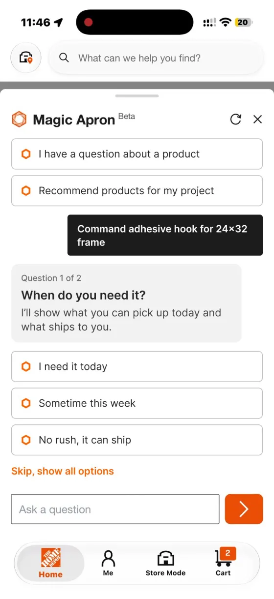
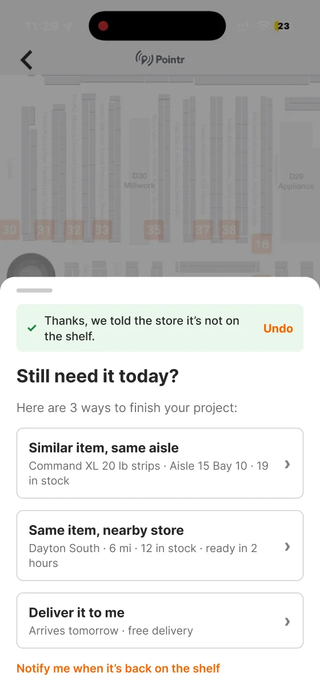
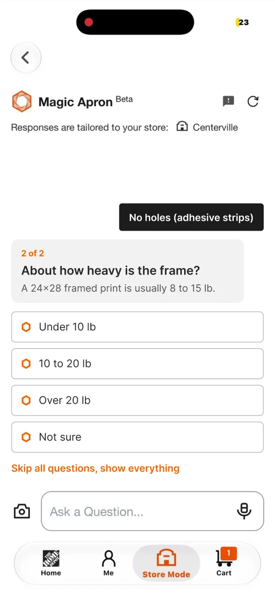

Status
Concept, not affiliated with The Home Depot
AI assistant · Retail concept · Case study 10
Fixing an AI shopping assistant after watching a first-time DIYer use it.

Same question, two different answers
Asked how to hang a photo frame, Store Mode showed only hanging kits. Adhesive strips appeared only after the person typed "Adhesive." When the strips weren't on the shelf, reporting it led nowhere.
Interviewed a first-time DIYer while they used the app, then designed 6 small changes on the real screens.
At home the assistant suggested hanging kits or adhesive strips. In Store Mode it showed only kits, and an empty shelf ended with "Thanks for letting us know."
How this project moved from the mess to a decision. Each stage lists only what was actually done.
Same question, asked in two places
Store Mode
The person had to ask again
Home tab
Two options, one answer
I wireframed the whole journey in grayscale first. I kept the ideas and moved them onto the real screens instead.
Six small changes, two shown here
One question as a tap would have caught "adhesive" in my interview, instead of a long answer people read past.
✓ Hypothesis: fewer repeat questions
Store Mode asks how you want to hang it, with tap options.
"Still need it today?" offers a similar item, a nearby store or delivery, with Undo.
✓ Hypothesis: more reports end in a purchase

After reporting, three ways to still get the item, with Undo.
The reasoning behind the screen: visual design, accessibility and the design system it was built on.

A 2 of 2 counter tells people the questions are almost done.
Each question comes with a typical answer, like 8 to 15 lb for a 24x28 frame, so people can answer without measuring.
Each option is a large tap target across the whole screen, including Not sure.
Skip questions, show all options sits under every question, so nobody is forced through the flow.
I kept Home Depot's orange, type and layout, and changed only the steps, so the fix fits what the team already ships.
One interview is a signal, not proof
These are hypotheses to test. Next, I'd test with 5 first-time DIYers, at home and in the store.
Concept, not affiliated with The Home Depot
Questions or feedback on this case study? manche.siddhi@gmail.com
Next project
Concept · AI assistant · Retail conceptFit Check: retail AI that checks before it answers